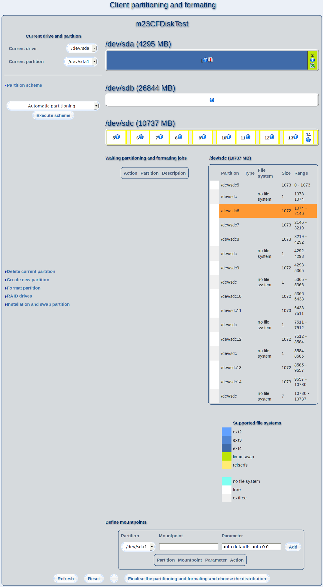

This dialog is designed for partitioning and formating your m23 client and the management and creation of software RAIDs. Click on "Finalise the partitioning and formating and choose the distribution" after you did all changes.

Overview
The tools and functions for editing the drives and partitions are shown in the menu on the left side. You can point to the desired function with the mouse cursor to open the menu block. Adjacent (and right) to the menu, the current partition and formating of all drives and RAIDs is displayed. Under "Waiting partitioning and formating jobs" the tasks are shown, that are needed to get the client into the displayed state. Adjacent (and right) to it detailed information are shown (if JavaScript is activated or the information about all drives are shown if deactivated) about the drive, the mouse cursor points to. In the caption under "Supported file systems" all file systems that can be created and managed with m23 are listed.
Subsections
dodger
2012-11-22